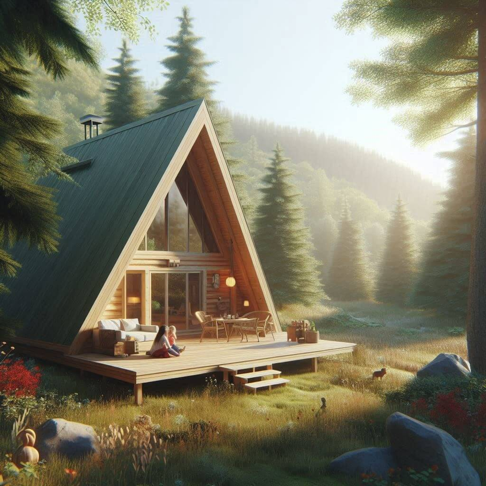
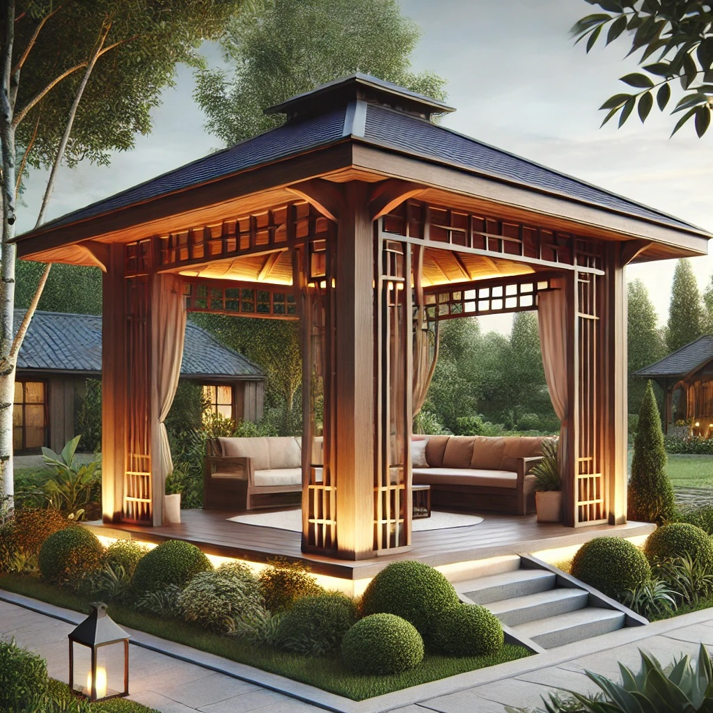
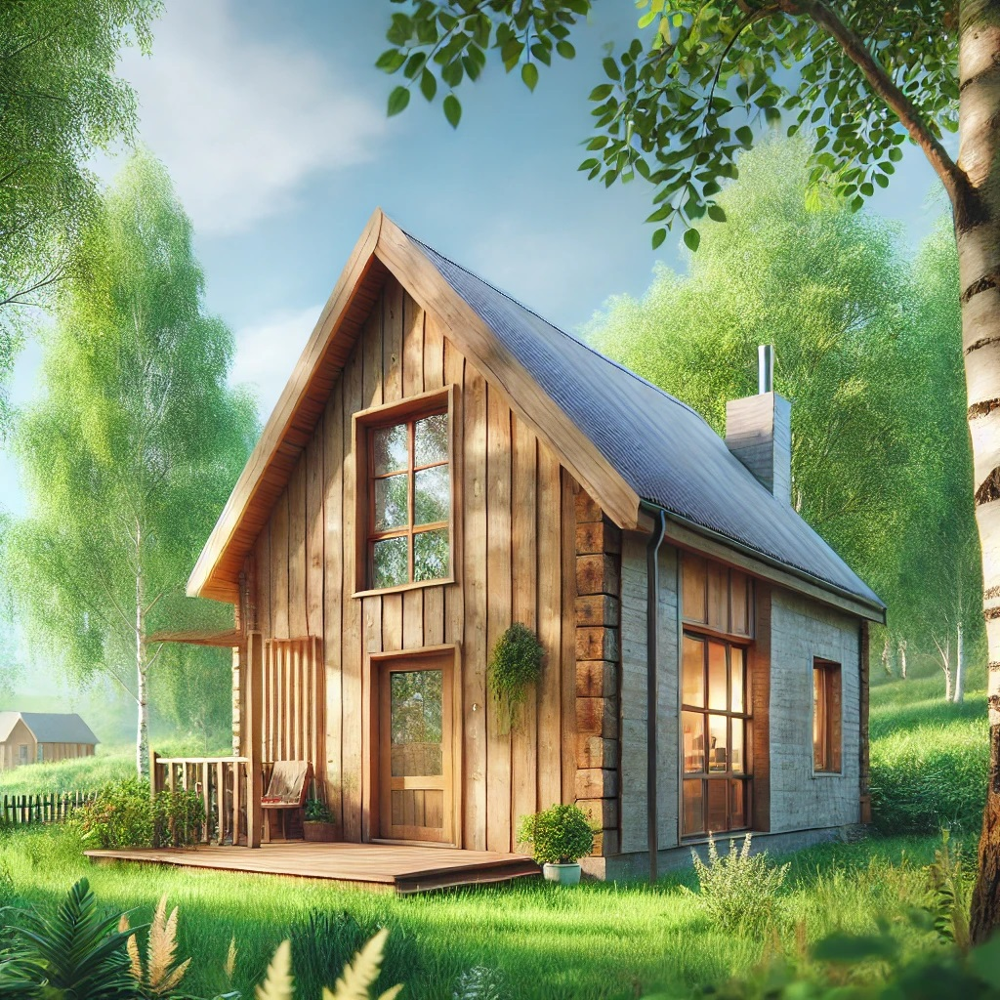

Cabane din Lemn
Cabane A-Frame – Simplitate, Eleganță, Confort
Cabanele A-Frame sunt simbolul unui stil de viață modern, simplu și conectat cu natura. Cu designul lor triunghiular iconic,
acestea oferă un spațiu aerisit, luminos și eficient energetic, fiind ideale pentru relaxare, vacanțe sau chiar locuințe permanente.
🏡 De ce să alegi o cabană A-Frame?
- ✔ Design spectaculos – Arhitectura lor unică adaugă un farmec aparte oricărui peisaj.
- ✔ Construcție rapidă și eficientă – Proiectate inteligent pentru un montaj rapid și sigur.
- ✔ Costuri optimizate – Folosim materiale de calitate, iar tu ai control total asupra bugetului.
- ✔ Eficiență energetică – Structura permite o bună izolare termică, reducând costurile de încălzire.
Fie că îți dorești o cabană mică pentru evadări de weekend sau un refugiu montan elegant,
la WoodVibes o construim exact așa cum o visezi. Hai să discutăm despre proiectul tău!

Foișoare
Foișoare – Relaxare în aer liber, în stilul tău
Un foișor este locul perfect unde poți savura liniștea naturii, fie că ești în grădină, lângă casă sau într-o zonă de agrement.
Construim foișoare personalizate, adaptate stilului și nevoilor tale, fie că îți dorești un spațiu deschis pentru relaxare
sau un loc acoperit, protejat de vremea capricioasă.
🌿 Avantajele unui foișor WoodVibes
- ✔ Design personalizat – Alegi dimensiunile, forma și materialele, iar noi îți aducem ideea la viață.
- ✔ Materiale durabile – Folosim lemn tratat pentru rezistență și o viață lungă.
- ✔ Funcționalitate maximă – Spațiu perfect pentru grătare, întâlniri cu prietenii sau seri liniștite în familie.
- ✔ Montaj rapid și fără stres – Ne ocupăm de tot, iar tu te bucuri de rezultat.
Transformă-ți grădina într-un colț de relaxare perfect!
Contactează-ne și hai să creăm împreună foișorul ideal pentru tine.

Case Ecologice
Case Ecologice – Locuințe Sănătoase, Prietenoase cu Natura
Dacă visezi la o casă sănătoasă, eficientă energetic și construită din materiale naturale, atunci o casă ecologică este alegerea ideală.
La WoodVibes, realizăm locuințe din lemn, eficiente, confortabile și sustenabile, menite să ofere un stil de viață sănătos și modern.
🏠 De ce să alegi o casă ecologică?
- ✔ Materiale naturale – Lemn de calitate, tratat ecologic, pentru un mediu sănătos.
- ✔ Eficiență energetică – Construcții bine izolate, care reduc consumul de energie.
- ✔ Design versatil – De la stil rustic la modern, casele ecologice sunt adaptabile oricărui gust.
- ✔ Durabilitate și rezistență – Construim pentru viitor, folosind soluții sustenabile.
Indiferent dacă îți dorești o casă permanentă, o căsuță de vacanță sau o locuință de mici dimensiuni, echipa noastră
te ajută să îți îndeplinești visul. Hai să discutăm despre casa ta ecologică!
